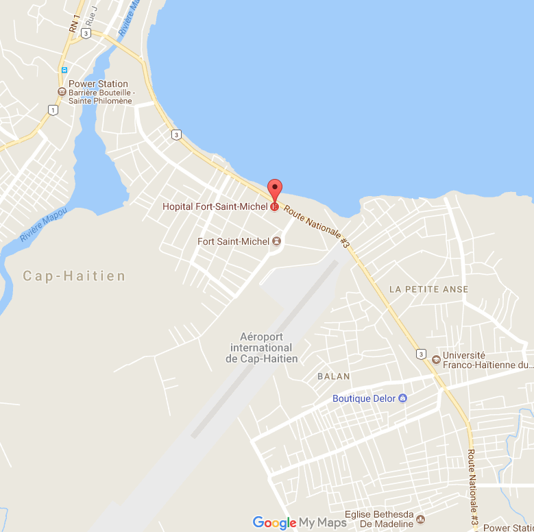
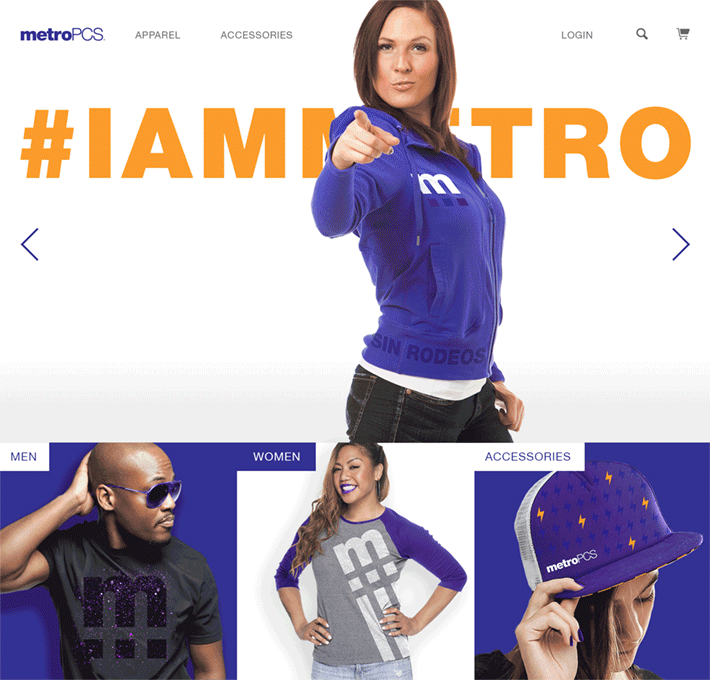

About me.
You can find my contact information below.
-

Summer 1993
Humble Beginnings
Born in Northern Haiti, my story begins there and have been the focus of most of my side projects. These include peer-to-peer blockchain banking and lending at a micro scale as well as NGO procurement assistance made for all developing countries.
-

June 2012
Palm Beach State College
With original coursework focused on nurobiology, the pivot to computer science was a natual. Mostly interested in neural network data structures and financial modeing.
-

August 2014
Research at Florida Poly
As part of the inargual class of Florida Polyechnic University, I was given a unique oppurtunity to be a part of a great instiution an do some great research!
-

Leap Year 2016
T-Mobile / metroPCS Corporate
metroPCS coroporate allowed me to hone in customer needs when it came to mobile applicartions, and gave me the much needed capital to fund my endeavours
-
"'A' player hire 'A' players, 'B' players hire 'C' players." - Steve Jobs